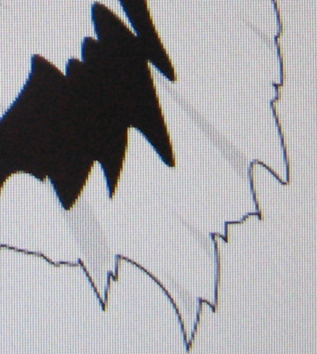
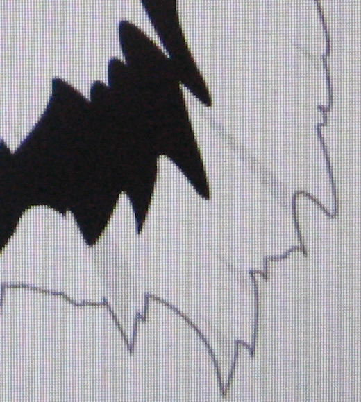
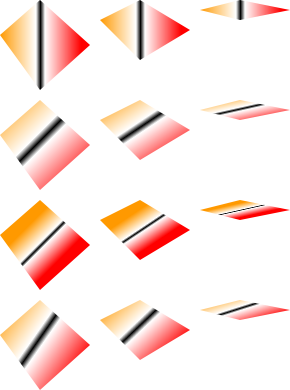
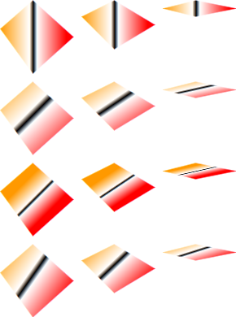
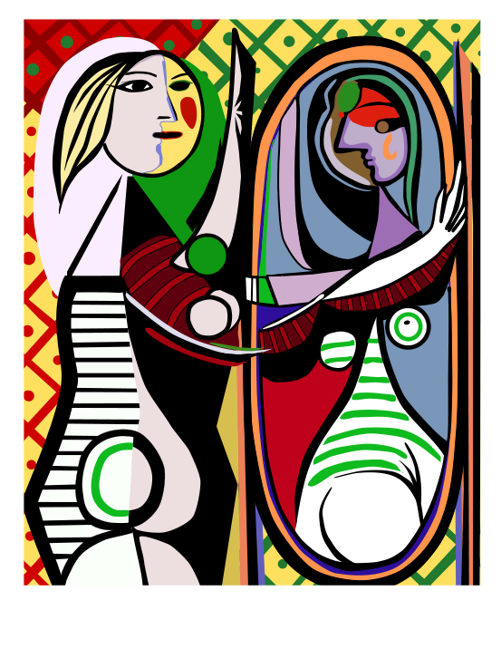
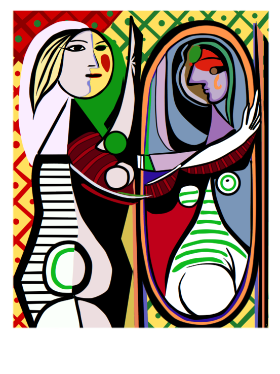
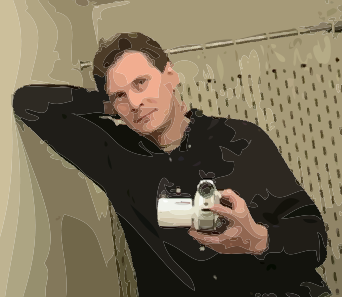
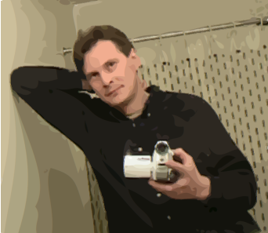

The
Morphic 3 Project
Morphic
3 is a research and development project aimed at building the next
standard in 2D user interfaces. It has been (and still is) developed
exclusively by me on my free time, since 2007.
This article is translated to Serbo-Croatian language by Jovana Milutinovich from Webhostinggeeks.com. Thanks, Jovana!
You can read more about Morphic 3 here.
New!
You can see the Cuis and Morphic 3 talk at the Smalltalks conference in
Buenos Aires here.
Vector graphics with proper anti-aliasing:
All you ever heard
about graphics anti-aliasing is wrong!
Now that I got your attention, what I really mean is that the rendering
software and algorithms that are usually presented as state of the art,
in fact are not. This includes many textbooks. I'm talking about the
usual Pixel Coverage technique, and the more expensive but sometimes
better looking Supersampling technique. See http://en.wikipedia.org/wiki/Anti_aliasing,
in particular the Signal Processing approach to anti-aliasing.
Anti-aliasing
is usually considered a technique to avoid "stairway" artifacts on
rendered images. This is a simplistic view on the problem. Aliasing is
a
consequence of sampling continuous functions (images, photos, sound,
etc). Makers of digital cameras and audio software know and use the
theory behind it. You can read more at http://en.wikipedia.org/wiki/Nyquist–Shannon_sampling_theorem.
Researches know all this. The best text
books say it. However, existing graphics software
completely ignore the theory. In fact, I developed new drawing
algorithms that give better results than those in Cairo, AGG, etc.
The
methods to do anti-aliased 2D images currently in use are
Super-Sampling and Pixel-Coverage.
For super sampling to effectively
avoid aliasing, the super sampled display should have high enough
resolution to be above the Nyquist frequency of the image. Usually this
is not the case, the super sampled display will also have aliasing
(although less), and aliasing is reduced but not completely avoided.
Besides, doing super sampling with a really good resolution (for
example 64x) requires a huge amount of computation, and is too slow
even if run in a modern GPU.
Pixel
coverage is no better, as it behaves as an infinite resolution
super sampling, but using a very bad filter: A step filter in the
spatial domain. The frequency response of such filter has no real
cutoff frequency, and therefore it doesn't bound aliasing. Besides the
filter is fixed: exactly one pixel wide and high. This is a bad choice
as it doesn't take into account the Kell factor.
The sampling theorem is about 80 years old. It is the base (together
with Fourier analysis) of most of the DSP (Digital Signal Processing)
field. It is therefore the basis of digital audio and photography.
My
quest for higher quality resulted in the idea of applying the
Sampling
theory for all
rendering. This allows for mathematically proved alias free rendering.
As no existing application does this, my samples set a new level of
quality for SVG rendering.
I
have been working on these ideas for the last 3 years, after finishing
my Ms.Sc. in CS on Image and Signal Processing. I had come up with new
algorithms to draw basic
elements using this theory. What you see are the first practical result
of all this work. It is done by modeling all the objects to be drawn as
continuous
functions that
specify color at each (x, y) point. This functions are properly
filtered and sampled at the actual position of the pixel color elements
(sub pixels).
See it in action:
Warning.
Older
non-LCD
displays do smooth the images and can't make use of sub pixel
rendering. The quality
enhancement here is most visible on current LCD displays connected via
a
digital
interface (actually anything but the old VGA cable). The perceived
quality also depends on the observer. You
might need to come a bit closer to the display to fully see it.
Left is
Inkscape. Right is Morphic 3.
Inkscape calls the Cairo graphics library,
that uses Pixel Coverage. You can see individual pixels. Besides you
can also see a
reddish shadow at the right of black areas and a blueish shadow at
their left. Morphic 3 exhibits none of these defects. A closeup photo
of the display makes them more evident.
Left is an
actual photo of Inkscape in my display. Right is same for Morphic 3.
Click
on any of them to get the original jpeg file from my camera.


Left is
Inkscape (same as before), right is Morphic 3, with only whole pixel
anti aliasing
Morphic 3 gives great results even if
restricted to whole pixel anti aliasing.
This
is the original svg file for all these samples.
What follows is a test of linear gradients,
with some geometrical transformations applied.
Again, the image
at the right is done by Morphic 3 and the one at the left is done by
Inkscape.
Left is
Inkscape. Right is Morphic 3.


The
biggest difference is that Inkscape creates the usual colored shadow
around the thick black line, blueish at the left and reddish at the
right. Morphic 3 does no artifact. Click on any of them to see the
original SVG rendered by your browser. All browsers I tested give lower
quality than Inkscape or Morphic 3 in this sample.
The next example
is interesting because it exhibits a common problem with vector
graphics. If you have adjacent polygons, the anti aliased edges
superimpose and create this white seams artifact. You can see that the
Morphic 3 image is a lot less pixelated. But look below...
Left is
Inkscape. Right is Morphic 3.
Morphic 3,
with adjacent polygon fix
This
last one is done with a new technique I developed for Morphic 3 that
completely avoids the problem, without creating other artifacts and
without any need for user intervention.
Isn't that cool?
Let's see a few more examples. Click on any
of them to get the original SVG file.
Left is
Inkscape. Right is Morphic 3.
 
Left is
Inkscape. Right is Morphic 3.
 
I hope you enjoyed this tour on the
highest-quality 2d rendering ever!
Thanks for reading.
|


{kind=link}
{kind=link}
{kind=link}
{kind=link}
{kind=link}
{kind=link}
{kind=link}